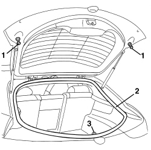

7015A10 TAILGATE - ADJUST STRIKER AND ADAPT SEAL IF NECESSARY
- Path
- Procedures > 70 FITTINGS > 7015 TAILGATE/FLAP > 7015A TAILGATE ASSEMBLY > 7015A10 TAILGATE - ADJUST STRIKER AND ADAPT SEAL IF NECESSARY
- Kind
- repair procedure (removal / refitting; the operation number is the code)
- Applies to
- all engines; all production periods
- Interactive page
- https://sloeber94.github.io/elrnDB-aBrrSpdr/en/#/946002546
Applies to: all engines; all production periods
- Open the tailgate.
1. Check that the self-adjusting buffers are working properly. Replace them if necessary.
Op. 7015B12 TAILGATE SELF-ADJUSTING BUFFERS - R.R.
2. Check that the tailgate housing seal along the entire perimeter is working properly.
3. If necessary, adjust the position of the lock striker.
Op. 7015B18 TAILGATE LOCK STRIKER - R+R
